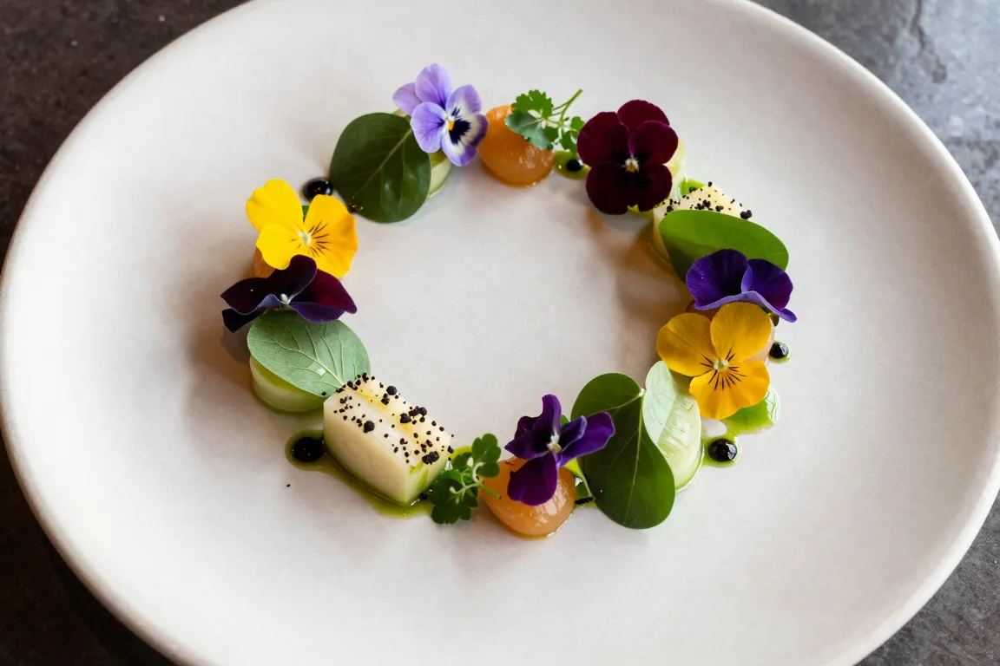

kjøkken · 1978–present · også: Cuisine naturaliste, Platåets kjøkken, Hage- og villplantekjøkken, Nytt villkjøkken
Et kjøkken som behandler tallerkenen som et landskap. Kokken plukker ville planter og hageplanter samme dag, tilbereder hver av dem i sitt eget tempo og viser den hel. Gargouillou til Michel Bras, først laget i 1980, rommer dusinvis av planter.

Kjerneidé
Landet rundt kjøkkenet er spiskammeret og læreren: kokken går i det, lærer hver plante i hver uke og lager bare det turen gir.
Designprinsipper
Plukk ville urter, blomster, røtter og sopp samme dag, og skriv menyen etter turen, ikke før den.
Tilbered hver plante for seg, til sitt eget punkt, og sett delene sammen først på tallerkenen.
Behold planten i sin naturlige form: bladet, blomsten, roten med sin form.
La grønnsaker, korn og belgfrukter bære tallerkenen; bruk kjøtt, fisk og meieriprodukter som en liten del av den.
Bruk smør, oljer og lette fond til å bære smaken av planten, ikke til å dekke den.
Se på tallerkenen som et lite landskap: strø delene i en løs, ujevn orden, slik planter vokser.
Gjør sausen til en tynn pytt eller en dott som gir syre eller bitterhet til plantene.
Antimønstre
En tung fløte- eller smørsaus som dekker planten
En fast meny som ikke endres med uken
En tallerken med et strengt midtpunkt og et symmetrisk garnityr
Luksusvarer som kaviar og foie gras brukt for prisens skyld
Importerte ingredienser når en lokal plante er i sesong